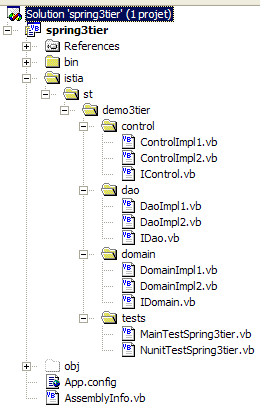
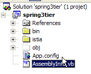
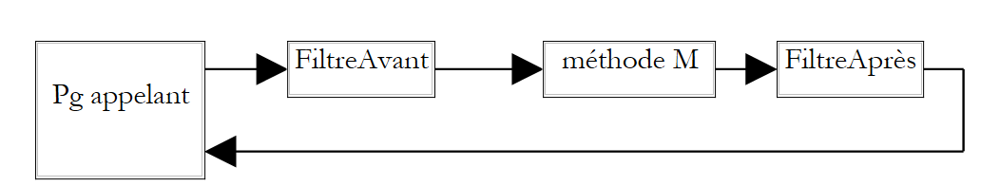
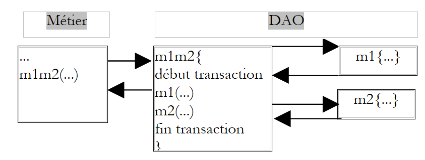
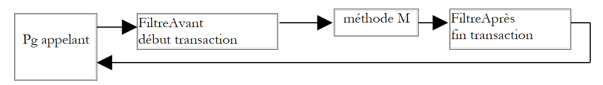

7. A solution
7.1. The Visual Studio project
 |  |
Comments:
- The files required by Spring have been placed in the [bin] folder: Spring.Core.dll, log4net.dll, Spring.Core.xml
- The Spring configuration files [spring-config-3tier-*.xml] have also been placed in the [bin] folder
- Under the [istia] root directory, you will find the various classes of the application
The project has been configured to generate the [spring3tier.dll] DLL in the [bin] folder:

7.2. The package [istia.st.spring3tier.dao]
The IDao interface:
Namespace istia.st.spring3tier.dao
Public Interface IDao
' do something in the [dao] layer
Function doSomethingInDaoLayer(ByVal a As Integer, ByVal b As Integer) As Integer
End Interface
End Namespace
A first implementation class:
Namespace istia.st.spring3tier.dao
Public Class DaoImpl1
Implements istia.st.spring3tier.dao.IDao
' do something in the [dao] layer
Public Function doSomethingInDaoLayer(ByVal a As Integer, ByVal b As Integer) As Integer Implements IDao.doSomethingInDaoLayer
Return a + b
End Function
End Class
End Namespace
- The class has no private fields
- The [doSomethingInDaoLayer] method returns the sum of its parameters as requested.
A second implementation class:
Namespace istia.st.spring3tier.dao
Public Class DaoImpl2
Implements istia.st.spring3tier.dao.IDao
' do something in the [dao] layer
Public Function doSomethingInDaoLayer(ByVal a As Integer, ByVal b As Integer) As Integer Implements IDao.doSomethingInDaoLayer
Return a - b
End Function
End Class
End Namespace
- The class has no private fields
- The [doSomethingInDaoLayer] method returns the difference between its parameters as requested.
7.3. The [istia.st.spring3tier.domain] package
The IDomain interface:
Namespace istia.st.spring3tier.domain
Public Interface IDomain
' do something in the [domain] layer
Function doSomethingInDomainLayer(ByVal a As Integer, ByVal b As Integer) As Integer
End Interface
End Namespace
A first implementation class IDomainImpl1:
Imports istia.st.spring3tier.dao
Namespace istia.st.spring3tier.domain
Public Class DomainImpl1
Implements istia.st.spring3tier.domain.IDomain
' private fields
Private _dao As IDao
' associated property
Public WriteOnly Property dao() As IDao
Set(ByVal Value As IDao)
_dao = Value
End Set
End Property
' default constructor
Public Sub New()
End Sub
' do something in the [domain] layer
Public Function doSomethingInDomainLayer(ByVal a As Integer, ByVal b As Integer) As Integer Implements IDomain.doSomethingInDomainLayer
a += 1
b += 1
Return _dao.doSomethingInDaoLayer(a, b)
End Function
End Class
End Namespace
- The class has a private field that is a reference to the singleton of type [IDao], which provides access to the [Dao] layer. This field will be initialized by Spring (dependency injection) when the object is constructed.
- The [doSomethingInDomainLayer] method increments its parameters and then passes them to the [doSomethingInDaoLayer] method of the [dao] singleton
A second implementation class, IDomainImpl2:
Imports istia.st.spring3tier.dao
Namespace istia.st.spring3tier.domain
Public Class DomainImpl2
Implements istia.st.spring3tier.domain.IDomain
' private fields
Private _dao As IDao
' associated property
Public WriteOnly Property dao() As IDao
Set(ByVal Value As IDao)
_dao = Value
End Set
End Property
' default constructor
Public Sub New()
End Sub
' do something in the [domain] layer
Public Function doSomethingInDomainLayer(ByVal a As Integer, ByVal b As Integer) As Integer Implements IDomain.doSomethingInDomainLayer
a -= 1
b -= 1
Return _dao.doSomethingInDaoLayer(a, b)
End Function
End Class
End Namespace
- The class has a private field that is a reference to the [IDao] singleton, which provides access to the [Dao] layer. This field will be initialized by Spring (dependency injection) when the object is constructed.
- The [doSomethingInDomainLayer] method decrements its parameters and then passes them to the [doSomethingInDaoLayer] method of the [dao] singleton
7.4. The [istia.st.spring3tier.control] package
The IControl interface:
Namespace istia.st.spring3tier.control
Public Interface IControl
' do something in the [control] layer
Function doSomethingInControlLayer(ByVal a As Integer, ByVal b As Integer) As Integer
End Interface
End Namespace
A first implementation class ControlImpl1:
Imports istia.st.spring3tier.domain
Namespace istia.st.spring3tier.control
Public Class ControlImpl1
Implements istia.st.spring3tier.control.IControl
' private fields
Private _domain As IDomain
' associated property
Public WriteOnly Property domain() As IDomain
Set(ByVal Value As IDomain)
_domain = Value
End Set
End Property
' default constructor
Public Sub New()
End Sub
' do something in the [control] layer
Public Function doSomethingInControlLayer(ByVal a As Integer, ByVal b As Integer) As Integer Implements IControl.doSomethingInControlLayer
a += 1
b += 1
Return _domain.doSomethingInDomainLayer(a, b)
End Function
End Class
End Namespace
- The class has a private field that is a reference to the singleton of type [IDomain], which provides access to the [Domain] layer. This field will be initialized by Spring (dependency injection) when the object is constructed.
- The [doSomethingInControlLayer] method increments its parameters and then passes them to the [doSomethingInDomainLayer] method of the [domain] singleton
A second implementation class, IControlImpl2:
Imports istia.st.spring3tier.domain
Namespace istia.st.spring3tier.control
Public Class ControlImpl2
Implements istia.st.spring3tier.control.IControl
' private fields
Private _domain As IDomain
' associated property
Public WriteOnly Property domain() As IDomain
Set(ByVal Value As IDomain)
_domain = Value
End Set
End Property
' default constructor
Public Sub New()
End Sub
' do something in the [control] layer
Public Function doSomethingInControlLayer(ByVal a As Integer, ByVal b As Integer) As Integer Implements IControl.doSomethingInControlLayer
a -= 1
b -= 1
Return _domain.doSomethingInDomainLayer(a, b)
End Function
End Class
End Namespace
- The class has a private field that is a reference to the singleton of type [IDomain], which provides access to the [Domain] layer. This field will be initialized by Spring (dependency injection) when the object is constructed.
- The [doSomethingInControlLayer] method decrements its parameters and then passes them to the [doSomethingInDomainLayer] method of the [domain] singleton.
7.5. The [Spring] configuration files
The [spring-config-3tier-1.xml] file uses version 1 of the implementations:
<?xml version="1.0" encoding="iso-8859-1" ?>
<!DOCTYPE objects PUBLIC "-//SPRING//DTD OBJECT//EN"
"http://www.springframework.net/dtd/spring-objects.dtd">
<objects>
<!-- the DAO class -->
<object id="dao" type="istia.st.spring3tier.dao.DaoImpl1, spring3tier"></object>
<!-- the domain class -->
<object id="domain" type="istia.st.spring3tier.domain.DomainImpl1, spring3tier">
<property name="dao">
<ref object="dao" />
</property>
</object>
<!-- the control class -->
<object id="control" type="istia.st.spring3tier.control.ControlImpl1, spring3tier">
<property name="domain">
<ref object="domain" />
</property>
</object>
</objects>
The [spring-config-3tier-2.xml] file uses version 2 of the implementations:
<?xml version="1.0" encoding="iso-8859-1" ?>
<!DOCTYPE objects PUBLIC "-//SPRING//DTD OBJECT//EN"
"http://www.springframework.net/dtd/spring-objects.dtd">
<objects>
<!-- the DAO class -->
<object id="dao" type="istia.st.spring3tier.dao.DaoImpl2, spring3tier"></object>
<!-- the domain class -->
<object id="domain" type="istia.st.spring3tier.domain.DomainImpl2, spring3tier">
<property name="dao">
<ref object="dao" />
</property>
</object>
<!-- the control class -->
<object id="control" type="istia.st.spring3tier.control.ControlImpl2, spring3tier">
<property name="domain">
<ref object="domain" />
</property>
</object>
</objects>
7.6. The test package [istia.st.spring3tier.tests]
A NUnit test [NunitTestSpring3tier.vb]:
Imports System
Imports Spring.Objects.Factory.Xml
Imports System.IO
Imports NUnit.Framework
Imports istia.st.spring3tier.control
Imports istia.st.spring3tier.domain
Namespace istia.st.springioc.tests
<TestFixture()> _
Public Class NunitTestSpring3tier
' singleton factories
Private factory1 As XmlObjectFactory
Private factory2 As XmlObjectFactory
<SetUp()> _
Public Sub init()
' Create the singleton factories
factory1 = New XmlObjectFactory(New FileStream("spring-config-3tier-1.xml", FileMode.Open))
factory2 = New XmlObjectFactory(New FileStream("spring-config-3tier-2.xml", FileMode.Open))
End Sub
<TearDown()> _
Public Sub destroy()
' Destroy the singletons
factory1.Dispose()
factory2.Dispose()
' release the singleton factories
factory1 = Nothing
factory2 = Nothing
End Sub
<Test()> _
Public Sub test()
'Get an implementation of the IControl interface
Dim control1 As IControl = CType(factory1.GetObject("control"), IControl)
' we use the class
Dim a1 As Integer = 10, b1 As Integer = 20
Dim res1 As Integer = control1.doSomethingInControlLayer(a1, b1)
Assert.AreEqual(34, res1)
' we retrieve another implementation of the IControl interface
Dim control2 As IControl = CType(factory2.GetObject("control"), IControl)
' we use the class
Dim a2 As Integer = 10, b2 As Integer = 20
Dim res2 As Integer = control2.doSomethingInControlLayer(a2, b2)
Assert.AreEqual(-10, res2)
End Sub
End Class
End Namespace
Running this test yields the following results:

Readers viewing a color version of this document will see that the results are "green," indicating that the test was successful.
7.7. Another type of Spring configuration file
A VB.NET application can be configured using a file called [App.config]. This file is placed at the root of the Visual Studio project:

Spring can utilize this configuration file. Consider the following [App.config] file, inspired by examples from the [Spring.net] documentation:
<?xml version="1.0" encoding="iso-8859-1" ?>
<configuration>
<configSections>
<sectionGroup name="spring">
<section name="context" type="Spring.Context.Support.ContextHandler, Spring.Core" />
<section name="objects" type="Spring.Context.Support.DefaultSectionHandler, Spring.Core" />
</sectionGroup>
</configSections>
<spring>
<context type="Spring.Context.Support.XmlApplicationContext, Spring.Core">
<resource uri="config://spring/objects" />
</context>
<objects>
<!-- an initial configuration -->
<!-- the DAO class -->
<object id="dao1" type="istia.st.spring3tier.dao.DaoImpl1, spring3tier"></object>
<!-- the domain class -->
<object id="domain1" type="istia.st.spring3tier.domain.DomainImpl1, spring3tier">
<property name="dao">
<ref object="dao1" />
</property>
</object>
<!-- the control class -->
<object id="control1" type="istia.st.spring3tier.control.ControlImpl1, spring3tier">
<property name="domain">
<ref object="domain1" />
</property>
</object>
<!-- a second configuration -->
<!-- the DAO class -->
<object id="dao2" type="istia.st.spring3tier.dao.DaoImpl2, spring3tier"></object>
<!-- the domain class -->
<object id="domain2" type="istia.st.spring3tier.domain.DomainImpl2, spring3tier">
<property name="dao">
<ref object="dao2" />
</property>
</object>
<!-- the control class -->
<object id="control2" type="istia.st.spring3tier.control.ControlImpl2, spring3tier">
<property name="domain">
<ref object="domain2" />
</property>
</object>
</objects>
</spring>
</configuration>
Note: The information below is provided with reservations. I am not sure I have correctly understood the meaning of all the elements in the configuration file above.
The XML syntax of the [App.config] file requires that it follow this format:
Management of the various sections of [App.config] can be delegated to external programs. This is what is done here in the [ConfigSections] section:
<configSections>
<sectionGroup name="spring">
<section name="context" type="Spring.Context.Support.ContextHandler, Spring.Core" />
<section name="objects" type="Spring.Context.Support.DefaultSectionHandler, Spring.Core" />
</sectionGroup>
</configSections>
The code above means that the section named [spring/context] must be managed by the class [Spring.Context.Support.ContextHandler] found in the [Spring.Core.dll] assembly, and that the section named [spring/objects] must be handled by the class [Spring.Context.Support.DefaultSectionHandler], which is also found in the [Spring.Core.dll] assembly.
The [spring/context] section is as follows:
<spring>
<context type="Spring.Context.Support.XmlApplicationContext, Spring.Core">
<resource uri="config://spring/objects" />
</context>
...
</spring>
This appears to indicate that the [spring/objects] section of the configuration file must be managed by the [Spring.Context.Support.XmlApplicationHandler] class, which can be found in the [Spring.Core.dll] assembly. This class must use an XML resource located at [config://spring/objects], i.e., the [spring/objects] section of the current configuration file.
In the [spring/objects] section, we find the Spring syntax we are now familiar with.
In the <objects>... </objects> section of the [App.config] file, we have defined two possible configurations for our 3-tier application:
- one that uses version 1 of the interface implementations
- another that uses version 2 of those same implementations
Now, how do you use the [App.config] file?
The following code shows a console application that uses the previous [App.config] file:
Imports System
Imports Spring.Context
Imports System.IO
Imports NUnit.Framework
Imports istia.st.spring3tier.control
Imports istia.st.spring3tier.domain
Imports System.Configuration
Namespace istia.st.springioc.tests
Module MainTestSpring3tier
Public Sub main()
' The Spring context that will allow us to retrieve the singletons
Dim context As IApplicationContext = CType(ConfigurationSettings.GetConfig("spring/context"), IApplicationContext)
' We retrieve a first implementation of the IControl interface
Dim control1 As IControl = CType(context.GetObject("control1"), IControl)
' We use the class
Dim a1 As Integer = 10, b1 As Integer = 20
Console.WriteLine("res1({0},{1})={2}", a1, b1, control1.doSomethingInControlLayer(a1, b1))
' retrieve another implementation of the IControl interface
Dim control2 As IControl = CType(context.GetObject("control2"), IControl)
' we use the class
Dim a2 As Integer = 10, b2 As Integer = 20
Console.WriteLine("res2({0},{1})={2}", a2, b2, control2.doSomethingInControlLayer(a2, b2))
' pause
Console.WriteLine("Press [Enter] to continue...")
Console.ReadLine()
End Sub
End Module
End Namespace
Comments:
- In the NUnit examples we’ve used so far, we used an [XmlObjectFactory] object to obtain the singletons we needed. Here, the object used is of type [IApplicationContext], a Spring interface. It is obtained from [App.config] using the [ConfigurationSettings] class, a class traditionally used in .NET to process configuration files.
- We request the handler for the [spring/context] section. If we refer to the [App.config] file, we see that this handler is of type [XmlApplicationContext] and is responsible for managing the [spring/objects] section of [App.config].
- Once the [IApplicationContext] object is retrieved, it is used just like the [XmlObjectFactory] object we have been using up to now.
The previous program is named [MainTestSpring3tier.vb] and is located in the [tests] package:

The [spring3tier] project is configured so that [MainTestSpring3tier]:

Running the project yields the following results:
7.8. Conclusion
The Spring framework offers true flexibility in both application architecture and configuration. We used the IoC concept, one of Spring’s two pillars. The other pillar is AOP (Aspect-Oriented Programming), which we did not cover. It allows you to add “behavior” to a class method via configuration without modifying the method’s code. In simple terms, AOP allows you to filter calls to certain methods:
 |
- the filter can be executed before or after the target method M, or both.
- The method M is unaware of these filters. They are defined in the Spring configuration file.
- the code of method M is not modified. Filters are Java classes that must be implemented. Spring provides predefined filters, particularly for managing DBMS transactions.
- Filters are beans and, as such, are defined in the Spring configuration file as beans.
A common filter is the transaction filter. Consider a business layer method M that performs two inseparable operations on data (a unit of work). It calls two DAO layer methods, M1 and M2, to perform these two operations.
 |
Because it is in the business layer, method M abstracts away the underlying data storage. It does not, for example, need to assume that the data is in a DBMS and that it needs to place the two calls to methods M1 and M2 within a DBMS transaction. It is up to the DAO layer to handle these details. One solution to the previous problem is to create a method in the DAO layer that would itself call methods M1 and M2, wrapping these calls within a DBMS transaction.
 |
The AOP filtering solution is more flexible. It allows you to define a filter that, before calling M, will start a transaction and, after the call, will perform a commit or rollback as appropriate.
 |
There are several advantages to this approach:
- once the filter is defined, it can be applied to multiple methods, for example, all those that require a transaction
- the filtered methods do not need to be rewritten
- since the filters to be used are defined by configuration, they can be changed
For more information: http://www.springframework.net.